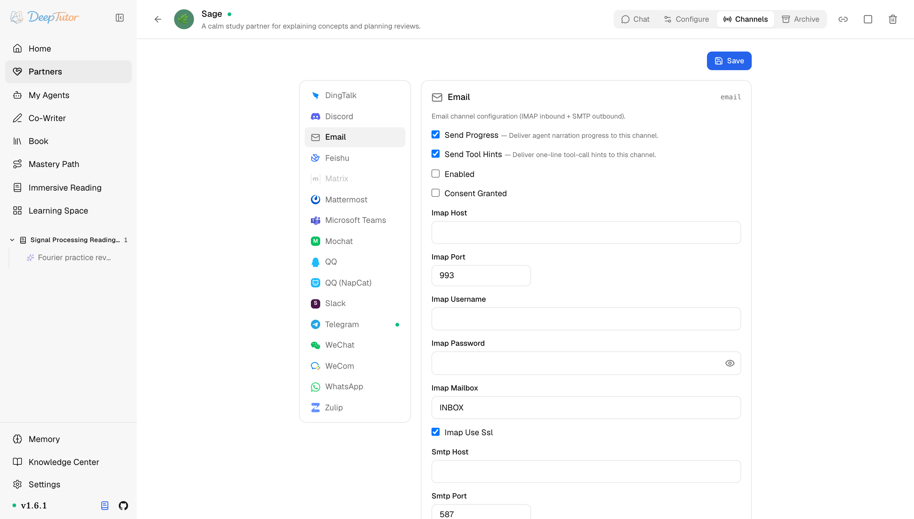

夥伴與管道郵件
DeepTutor 接入信箱教學！0 額外依賴直接跑，AI 秒變郵件客服，附全欄位設定說明！｜零度解說
使用 IMAP 輪詢收信、SMTP 回信，為 Partner 設定 email channel。
原文連結：https://docs.deeptutor.info/zh-cn/partners/email/
在所有 DeepTutor 管道裡，Email 是最特別的一個：它不需要即時連線，也不需要裝任何額外依賴，就能把 AI 學習夥伴（Partner）變成一個 24 小時線上的郵件通訊者。
email 管道的工作方式很簡單：輪詢 IMAP（收信協定）收件匣裡的未讀郵件，透過 SMTP（發信協定）回信。一來一回就是一個輪詢週期，沒有即時連線，所以很適合工單客服（help-desk）式的支援場景，以及那些就是更喜歡郵件、不愛用聊天軟體的使用者。

Partner 執行起來之後，先看卡片的即時狀態：Listener running 表示輪詢迴圈已啟動，Configuration required 會在你查日誌之前先指出缺失項。
一、安裝依賴
什麼都不用裝，這是它最香的地方。
email 管道完全基於 Python 標準庫（imaplib + smtplib），任何 DeepTutor 安裝都能直接跑，不需要額外的 pip（Python 套件管理器）包，也不需要 extras。
官方入口：
1、Google App Password 管理頁【點選前往】
二、準備信箱帳號
Partner 需要一個自己的信箱，開通 IMAP 和 SMTP。
但是問題來了：千萬別複用你的個人信箱，管道會讀取並回復所有未讀郵件。
Gmail
- 給帳號開啟兩步驗證（2-Step Verification）。
- 建立一個 App Password ——16 位密碼，代替帳號密碼使用。開了 2FA 之後，普通密碼在 IMAP/SMTP 上會被拒絕。
- 確認 IMAP 已開啟：Gmail 設定 -> Forwarding and POP/IMAP -> Enable IMAP。
- 伺服器地址：
imap.gmail.com:993（SSL）和smtp.gmail.com:587（STARTTLS）。
Outlook / Office 365 —— 開了 2FA 的情況下，App Password 用法相同（前提是租戶允許）；不行就找管理員。
自建郵件服務（Postfix、Maddy 等）—— 直接用帳號密碼，host 和連接埠填自己的。
三、設定管道卡片（channel card）
開啟 Partners -> 你的 partner -> Channels -> Email。
| 欄位 | 怎麼填 |
|---|---|
| Send Progress | 每條過程解說（narration）更新都是一封單獨的郵件。第一次測試可以開；多數部署會關掉，免得信箱被洗版。 |
| Send Tool Hints | 同樣的問題——一條提示一封郵件。除錯之外建議關閉。 |
| Enabled | 準備開始輪詢時再開啟。 |
| Consent Granted | 硬性隱私閘門。沒開啟之前管道拒絕讀寫任何郵件。務必在信箱所有者明確同意讓 DeepTutor 處理收件匣之後再開。 |
| Imap Host | 如 imap.gmail.com 。 |
| Imap Port | 預設 993 （IMAP over SSL）。 |
| Imap Username | 通常是完整信箱地址，如 tutor@example.com 。 |
| Imap Password | App Password（Gmail/Outlook 開 2FA 時）或帳號密碼（自建服務）。以 secret 方式儲存。 |
| Imap Mailbox | 預設 INBOX 。有些服務商的資料夾名拼法不一樣——輪詢收不到郵件時去 webmail 裡確認一下。 |
| Imap Use Ssl | 連接埠 993 時保持開啟。 |
| Smtp Host | 如 smtp.gmail.com 。 |
| Smtp Port | 預設 587 （STARTTLS）。配合 Smtp Use Ssl 時用 465 。 |
| Smtp Username | 通常和 Imap Username 一樣。 |
| Smtp Password | 通常是同一個 App Password。以 secret 方式儲存。 |
| Smtp Use Tls | 連接埠 587 上的 STARTTLS。除非換用下面的隱式 SSL，否則保持開啟。 |
| Smtp Use Ssl | 隱式 SSL，一般配連接埠 465。兩個 TLS 選項二選一，不要同時開。 |
| From Address | 可選。留空時退回到 Smtp Username，再退回到 Imap Username。 |
| Auto Reply Enabled | 關閉後 Partner 不再自動回覆入站郵件（主動傳送不受影響）。測試時可以當剎車用。 |
| Poll Interval Seconds | 預設 30 。檢查收件匣的頻率；小於 5 的值會被鉗到 5。 |
| Mark Seen | 把處理過的郵件標為已讀——這是最主要的去重保護。保持開啟。 |
| Max Body Chars | 預設 12000 。超長正文會在進入 Partner 之前被截斷。 |
| Subject Prefix | 預設 Re: 。回信主題會加上這個字首，除非原主題已經以 Re: 開頭。 |
| Allow From | 一行一個信箱地址，全小寫。測試可填 * 表示開放。空列表拒絕所有人。 |
每個不同的發件人地址都是一個獨立會話（session）；回信帶 In-Reply-To header，在對方的郵件使用者端裡能正確歸到同一個會話執行緒。
四、儲存之後
- 點 Save ，然後把 Enabled 和 Consent Granted 都開啟，再儲存一次。
- 啟動 partner：從網頁介面，或
deeptutor partner start <partner-id>。如果已經在執行，重新啟動一下讓管道讀到新設定。 - 用 Allow From 裡列出的地址發一封測試郵件，最多等一個輪詢週期收回復。
- 回覆正常後，把 Allow From 裡的
*換成真正要服務的地址。
如何確認健康
健康的 email 管道通常有三個跡象：
- 日誌顯示
Starting Email channel (IMAP polling mode)...，沒有missing:或 consent 警告； - 允許的發件人發一封測試郵件，大約一個輪詢週期內能收到回覆；
- 處理過的郵件在信箱裡顯示為已讀（ Mark Seen 開啟時）。
常見問題
管道啟動了但什麼都不做
看日誌。consent_granted is false 說明 consent 閘門沒開，這是刻意設計的阻力，請有意識地開啟 Consent Granted。Email channel not configured, missing: ... 會列出六個必填欄位（IMAP/SMTP 的 host、username、password）裡具體哪幾個是空的。
IMAP authentication failed
Gmail 和 Outlook 開了 2FA 之後，帳號密碼在 IMAP/SMTP 上永遠不可用，必須用 App Password。同時確認服務商設定裡 IMAP 已開啟；Gmail 預設是關的。
同一封郵件收到重複回覆
Mark Seen 是主要的去重手段：關掉它，每次輪詢都會重讀同一封未讀郵件。另外確保只有一個執行中的 partner 在輪詢這個信箱，兩個例項會互相打架。
和自動回覆機器人互刷
如果 Partner 給一個會自動回覆的地址發信（休假自動回覆、其他 bot），雙方可能每個輪詢週期互嗆一輪。把 Allow From 收緊，陌生人的自動回覆直接擋在門外；緊急時關掉 Auto Reply Enabled 當剎車。
回信進了垃圾箱
設定一個正經的 From Address；自建網域要補上 SPF/DKIM/DMARC 記錄，或者把出站郵件轉送到可信的 SMTP 服務。
實際效果還會受到模型、提示詞以及具體使用場景的影響，建議大家結合自己的需求實際體驗評估。